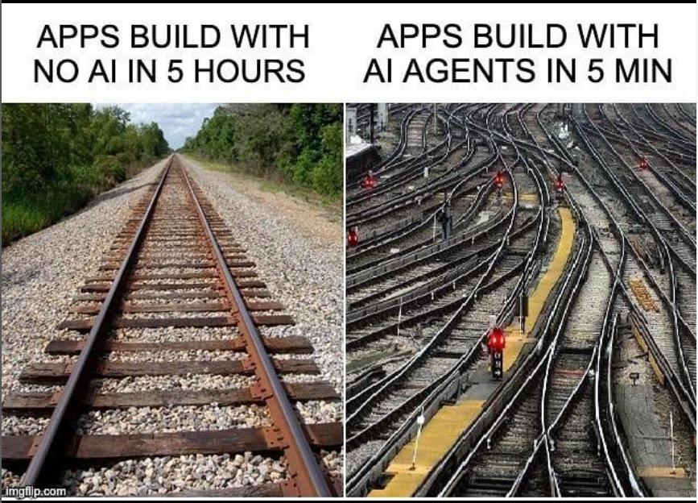

Route name, Wikiloc URL, GPX file upload, or voice. The agent resolves it automatically.
Live AEMET weather, mountain bulletin, snow & avalanche risk, elevation profile, gear advice, and safe time windows.
If the track exceeds the seasonal snow line and the avalanche bulletin is unavailable, verdict is forced to CAUTION regardless of the LLM output.
Searches OpenStreetMap and Wikiloc for nearby trails within 10 km, plus mountain refuges.
The agent scaffolding, boilerplate, and frontend came fast. The hard work was domain decisions — what data matters, how to weight it, when to override the LLM.
Trusting the model blindly for safety-critical verdicts is risky. The snow-line override was a deliberate choice to keep a human-defined rule in the loop.
Containerising an agent with a headless browser, scraping, and vector store taught more about systems than any isolated tutorial.
· Multi-day trip planning with date-aware forecasts
· Real user accounts & saved routes
· Expand beyond Spain (OpenMeteo + other bulletins)
438.187 tokens were wasted during the development of this project
Happy to answer any questions — about the project, the stack, or the AI workflow behind it.
